Kung Fu Panda es una película de animación de aventura estadounidense-china de 2008, producida por el estudio DreamWorks Animation y dirigida por Mark Osborne y John Wayne Stevenson.
Protagonizada por Jack Black, Jackie Chan, Dustin Hoffman, Angelina Jolie, Seth Rogen, Ian McShane, Lucy Liu y David Cross.
Fue estrenada en Estados Unidos el 6 de junio de 2008. Es la primera entrega de la franquicia de Kung Fu Panda. Tiene dos secuelas, Kung Fu Panda 2 y Kung Fu Panda 3, estrenadas en 2011 y 2016, respectivamente.
Reparto
Jack Black - Po/Guerrero Dragón, un oso panda.
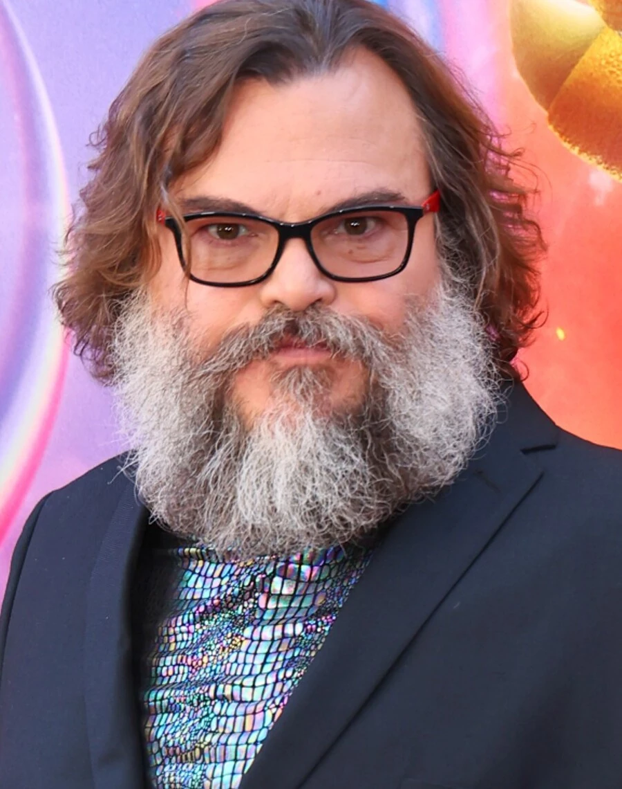
Dustin Hoffman - Maestro Shifu, un panda rojo albino.
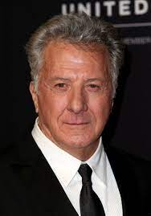
Randall Duk Kim - Maestro Oogway, un anciano tortuga de las Galápagos.
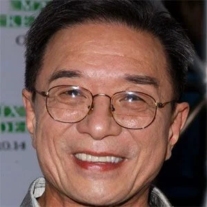
Angelina Jolie - Tigresa, una tigre del sur de China.
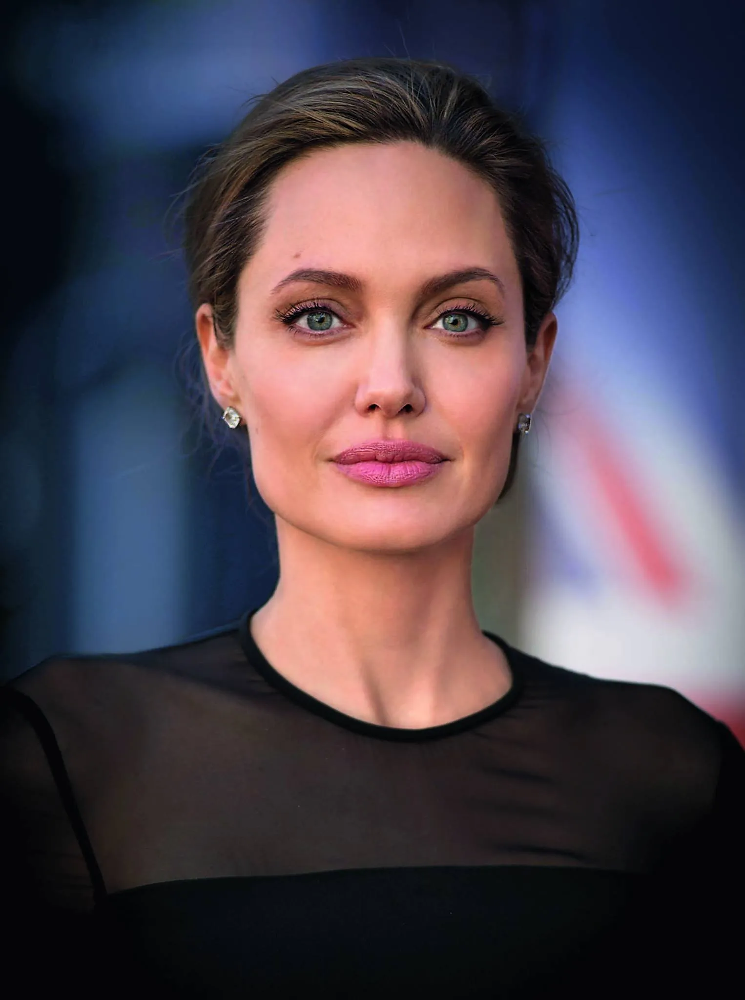
Jackie Chan - Mono, un langur dorado.
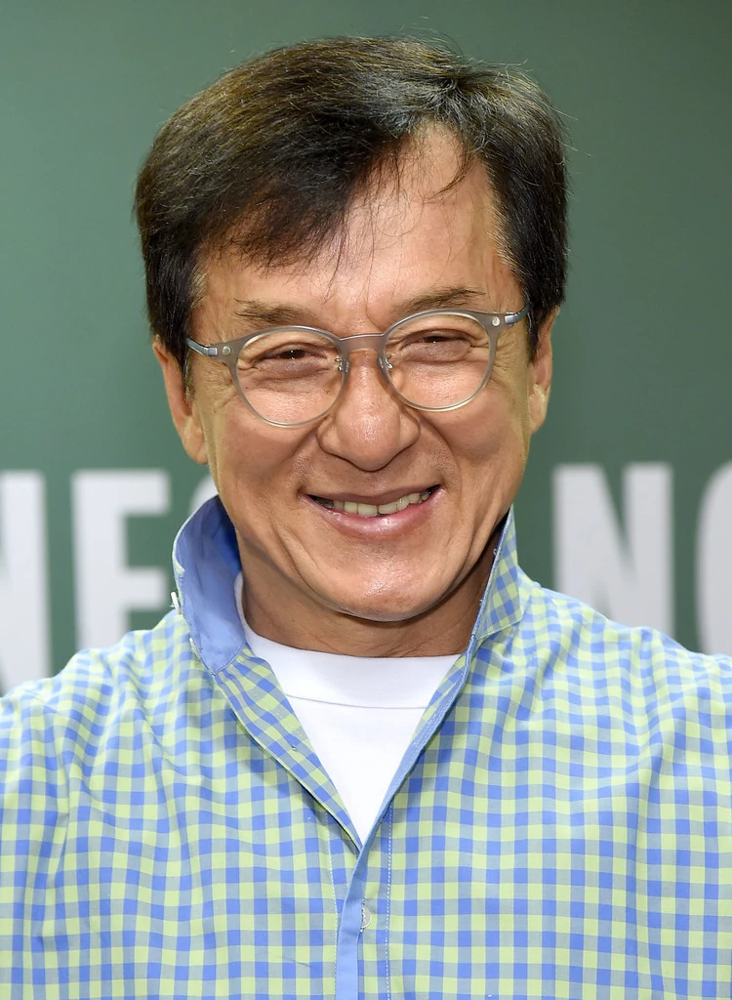
Seth Rogen - Mantis, una mantis china macho.
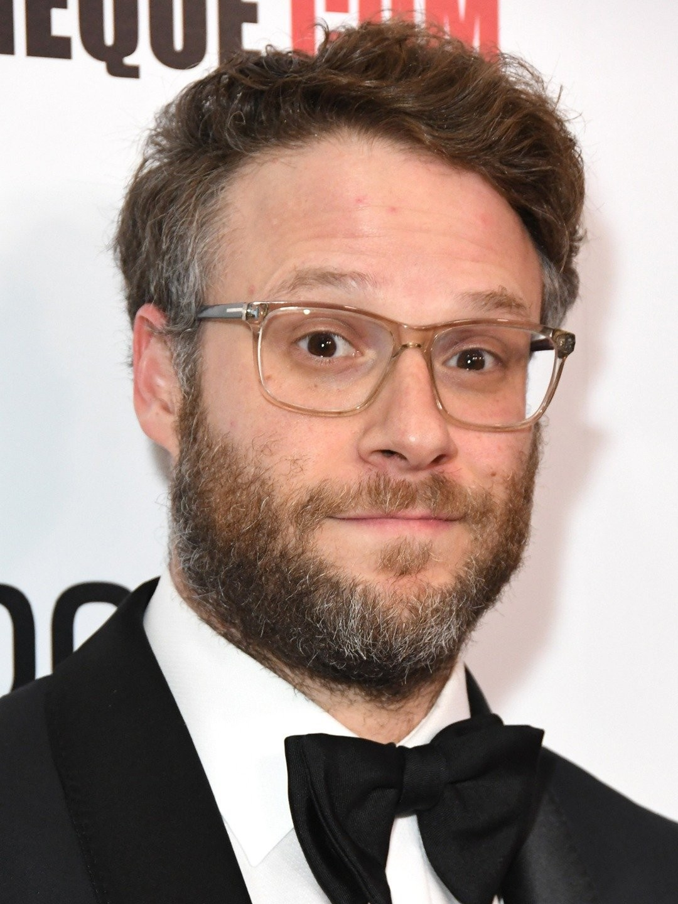
Lucy Liu - Víbora, una víbora del bambú.
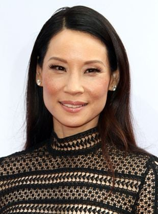
David Cross - Grulla, una grulla de Manchuria.

Ian McShane - Tai Lung, un leopardo de las nieves.
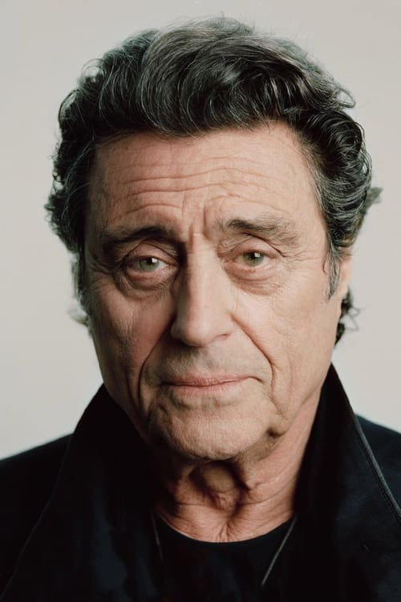
James Hong - Señor Ping (padre de Po), una ganso chino.
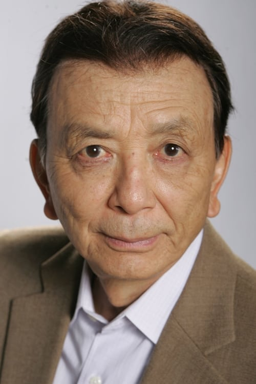
Dan Fogler - Zeng (mensajero de Shifu), un ganso chino negro.
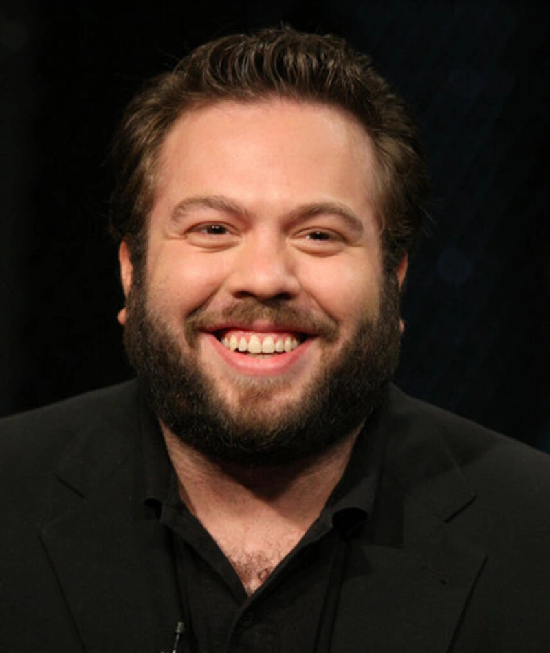
Michael Clarke Duncan - Comandante Vachir, un rinoceronte de Java.
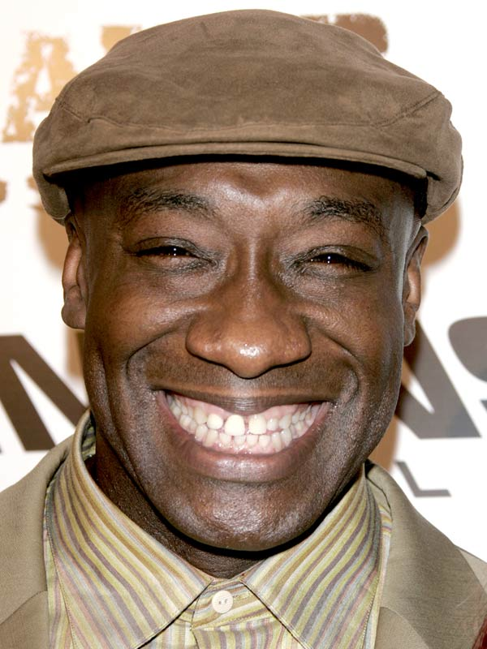